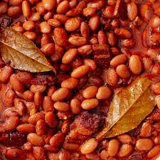

Beans

Ingredients:
- 2 cups cooked beans (such as kidney, white, or navy beans)
- 2 tablespoons butter (or olive oil for a lighter version)
- 4 garlic cloves, minced
- 1 tablespoon fresh lemon juice
- 1/2 teaspoon dried thyme (or fresh if available)
- Salt and pepper, to taste
- Fresh parsley, chopped (optional)
- Red pepper flakes (optional, for a bit of spice)
Instructions:
- Prep the beans: If you're using canned beans, drain and rinse them. If you're using dried beans, ensure they're cooked and tender.
- Cook garlic: In a large skillet, melt the butter (or heat olive oil) over medium heat. Add the minced garlic and cook for 1-2 minutes until fragrant, but not browned.
- Add beans: Stir in the cooked beans and cook for about 5 minutes, stirring occasionally, until they are heated through and slightly crispy at the edges.
- Season: Add lemon juice, thyme, salt, and pepper. Stir to combine, making sure all the beans are coated in the seasoning. Taste and adjust seasoning if needed.
- Serve: Top with freshly chopped parsley and a sprinkle of red pepper flakes for some heat, if desired.
Enjoy!
This dish is great as a side to roasted chicken, grilled vegetables, or even as a snack on its own!